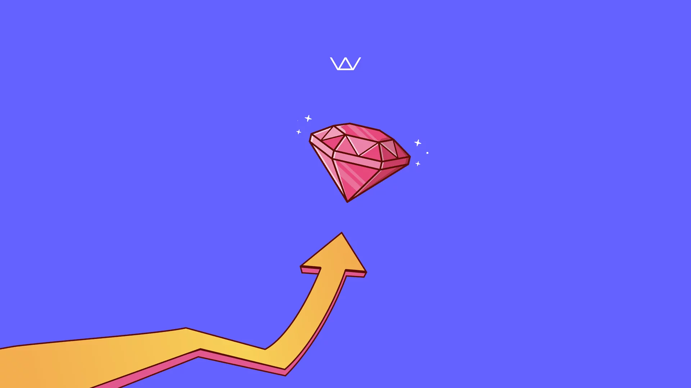

System Improvement
(R&D) Upgrade Ruby & Rails Framework Version

Led a research and development initiative to upgrade the core technology stack of Alodokter's applications from Ruby 3.0 to 3.2 and Rails 6.0 to 7.0.
This strategic technical upgrade enhanced application security, performance, and maintainability while ensuring continued support and compatibility with the latest ecosystem developments.
- CompanyAlodokter
- RolePrincipal Architect Fullstack
- Year2023
Key Responsibilities
Technical Leadership
- Conducted comprehensive Proof of Concept (PoC) for the Ruby and Rails version upgrades.
- Developed a phased migration strategy to minimize disruption to production systems.
- Created detailed documentation for the upgrade process to guide development teams.
Security Enhancements
- Addressed multiple security vulnerabilities present in older framework versions.
- Implemented enhanced authentication and authorization patterns available in Rails 7.0.
- Conducted security audits before and after the upgrade to verify improvements.
Performance Optimization
- Leveraged Ruby 3.2's performance improvements, including YJIT (Yet Another Ruby JIT).
- Implemented Rails 7.0's improved caching mechanisms and HTTP/2 support.
- Achieved significant reduction in response times and server resource utilization.
Technical Debt Reduction
- Resolved compatibility issues with dependent gems and libraries.
- Refactored deprecated code patterns to align with modern Rails conventions.
- Established automated testing protocols specifically for the upgrade process.
Infrastructure Modernization
- Updated Docker configurations to support the new Ruby and Rails versions.
- Modified Kubernetes deployment configurations to accommodate new requirements.
- Optimized Google Cloud Platform resources to take advantage of new efficiencies.
Technology Stack
- Languages & Frameworks Ruby 3.2, Ruby on Rails 7.0
- Database MongoDB
- Caching Redis
- Search Elasticsearch
- Containerization Docker
- Orchestration Kubernetes
- Cloud Platform Google Cloud Platform (GCP)
Results
The successful upgrade substantially improved application performance, enhanced security posture, and reduced technical debt across Alodokter's systems. The modernized stack provided developers with access to new features and APIs, accelerating future development while ensuring compliance with industry best practices and regulations.